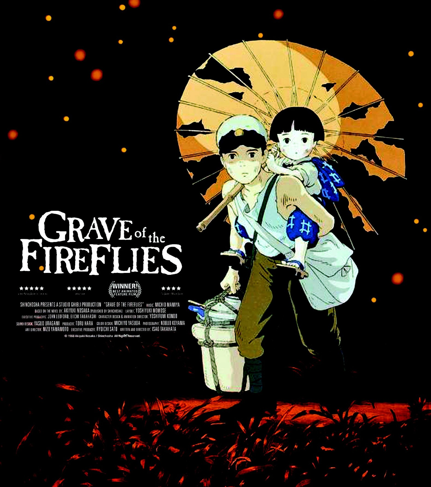

List phim
Vùng đất linh hồn
(千と千尋の神隠し)
Mộ đom đóm
(火垂るの墓)

Lâu đài bay của pháp sư Howl
(ハウルの動く城)
Công chúa sói Mononoke
(もののけ姫)

Hàng xóm tôi là Totoro
(となりのトトロ)

Nàng tiên cá phương đông
(崖の上のポニョ, がけのうえのポニョ)
Thế giới bí mật của Arietty
( 借りぐらしのアリエッティ, かりぐらしのアリエッティ))
Ngọn đồi hoa hồng anh
(コクリコ坂から)

Gió nổi
(風立ちぬ)

Lời thì thầm của trái tim
(耳をすませば)
Hồi ức về Marnie
(思い出のマーニー)

Lâu đài trên không Laptuta
(天空の城ラピュタ, てんくうのしろラピュタ)
Phù thủy Kiki (Tiki :>)
(魔女の宅急便)

Loài mèo trả ơn
(猫の恩返し, ねこのおんがえし)
Cuộc chiến gấu mèo
(平成狸合戦ぽんぽこ, へいせいたぬきがっせんぽんぽこ)
Gia đình Yamada
(ホーホケキョとなりの山田くん)

Chú heo màu đỏ
(紅の豚, くれないのぶた)
Ngày hôm qua
(おもひ で ぽろぽろ)

Truyền thuyết công chúa Kaguya
(かぐや姫の物語)
Lời tự truyện
Hello em iu,
Tại anh thấy em thích coi mấy phim này lâu rồi mà xem được có vài bộ à nên anh tổng hợp lại cho hai đứa mình dễ xem. Hơn nữa cũng là quà đút lót để mong em tha lỗi cho anh nha. Ai cũng có lúc sai lầm mà nhưng quan trọng là có nhận ra và sửa sai hay không. Anh đang cố gắng từng ngày để trưởng thành để bảo vệ và che chở cho em đấy bông hoa dại đặc biệt của anh <33
Tóm tắt phim
- Vùng đất linh hồn
- Mộ đom đóm
- Lâu đài bay của pháp sư Howl
- Công chúa sói Mononoke
- Hàng xóm tôi là Totoro
- Nàng tiên cá phương đông
- Thế giới bí mật của Arrietty
- Gió nổi
- Lời thì thầm của trái tim
- Hồi ức về Marnie
- Lâu đài trên không Laptuta
- Dịch vụ giao hàng của phù thủy Kiki (Tiền thân của Tiki)
- Loài mèo trả ơn
- Cuộc chiến gấu mèo
- Gia đình Yamada
- Chú heo màu đỏ
- Ngày hôm qua
- Truyền thuyết công chúa Kaguya
Chihiro Ogino là một cô bé 10 tuổi, đang cùng gia đình chuyển đến nhà mới thì cha cô rẽ nhầm một con đường lạ. Họ vô tình bước vào một thế giới ma thuật mà cha của Chihiro kiên quyết khám phá. Khi cha mẹ của Chihiro ăn tại một nhà hàng không người, cô tìm thấy một nhà tắm công cộng tráng lệ. Cô gặp một chàng trai trẻ, Haku, người khuyên cô mau trở lại con sông trước khi trời tối. Dù vậy, Chihiro phát hiện ra đã quá trễ, cha mẹ cô đã bị biến thành heo và cô không thể vượt qua con sông khi thủy triều đang dâng cao, khiến cô bị mắc kẹt trong thế giới linh hồn. Sau khi gặp lại Chihiro, Haku tìm cho cô một công việc từ Kamaji, một người đàn ông làm việc tại nhà tắm công cộng. Kamaji và một nhân viên tên Rin dắt Chihiro đến phù thủy Yubaba, người cai quản nhà tắm. Yubaba cho cô một công việc và đặt cho cô một cái tên mới: Sen (千?). Lúc đến thăm cha mẹ mình tại chuồng heo, Sen tìm lại một tấm thiệp chia tay gửi đến Chihiro và nhận ra cô đã quên mất tên thật của mình. Haku cho cô bé biết rằng Yubaba điều khiển người giúp việc bằng cách lấy đi tên thật của họ và cô sẽ bị mắc kẹt lại thế giới linh hồn nếu không nhớ được tên của mình. Trong lúc làm việc, Sen mời một sinh vật luôn im lặng đeo mặt nạ có tên là Vô Diện vào trong nhà tắm công cộng, tin rằng đó là một khách hàng. Một "linh hồn hôi thối" bất ngờ đến và là khách hàng đầu tiên của Sen. Cô bé nhận ra đây là vị thần của một con sông bị ô nhiễm. Để nhớ ơn người làm ông ta sạch sẽ, vị thần tặng cho cô một chiếc bánh bao thảo mộc thần kỳ. Trong lúc đó, Vô Diện dụ dỗ một nhân viên bằng vàng và nuốt chửng anh ta. Vô Diện đòi phục vụ thức ăn và trả tiền rất hậu hĩnh. Khi mọi người kéo đến mong chờ trả tiền, Vô Diện nuốt thêm hai nhân viên tham lam nữa.
Lúc đó tại phòng mình, Sen phát hiện ra những người giấy đang tấn công một con rồng và nhận ra đó chính là Haku biến hình. Khi Haku bị thương bay lên phòng Yubaba, Sen cũng tìm cách lên đó bằng cầu thang bên ngoài. Khi tìm thấy Haku, một người giấy dính vào lưng cô bé biến hình ra thành Zeniba, chị gái sinh đôi của Yubaba. Bà biến con trai của Yubaba là Boh thành một con chuột bạch, biến con chim của Yubaba thành một con ruồi nhỏ còn ba tay sai của Yubaba thành cậu bé con trai bà ta. Zeniba cho Sen hay rằng Haku đã ăn trộm chiếc ấn vàng của bà ta và cảnh cáo Sen rằng nó mang một lời nguyền chết chóc. Haku và Sen (cùng Boh trên lưng) bị rơi xuống phòng đun nước. Ở đó cô cho anh ăn một miếng bánh bao, giúp anh nôn được cả cái ấn và một con sên đen bị Sen dẫm nát.
Trong khi Haku còn bất tỉnh, Sen quyết định mang chiếc ấn trở lại trả cho Zeniba và xin lỗi thay Haku. Trước khi rời nhà tắm, Sen phải xử lý Vô Diện vì Yubaba cho rằng cô đã dẫn gã vào. Cô cho gã ăn phần còn lại của chiếc bánh bao. Vô Diện vừa đuổi theo Sen vừa nôn ra những gì hắn ăn và trở lại hình dạng ban đầu. Sen cùng Boh, con ruồi và Vô Diện lên đường đến gặp Zeniba. Ở nhà tắm lúc này, Yubaba phát hiện ra Boh mất tích vì Boh giả mạo đã trở lại hình dạng ba tên giúp việc. Haku hứa rằng sẽ mang Boh trở về với Yubaba, để đổi lại bà ta phải trả tự do cho Sen và cha mẹ cô.
Sen, Vô Diện, Boh và chú ruồi cùng đến nhà Zeniba. Zeniba, giờ đây là một "bà cụ" nhân từ, tiết lộ rằng tình yêu của Sen và Haku sẽ hóa giải lời nguyền của cô và Yubaba đã dùng con sên đen để kiểm soát anh ta. Haku trong hình hài con rồng đến nhà Zeniba, đưa Sen và Boh trở về nhà tắm. Vô Diện đồng ý ở lại nhà Zeniba, làm người giúp việc cho bà. Trên đường về, Sen nhớ rằng hồi bé mình bị ngã xuống sông Kohaku nhưng được sóng đánh lên bờ an toàn. Sau khi Sen đoán chính xác rằng Haku chính là thần sông Kohaku (và phát hiện ra tên thật của anh), Haku đã thoát khỏi sự điều khiển của Yubaba. Khi họ quay trở về nhà tắm, Yubaba bảo Sen phải tìm được cha mẹ mình trong một đàn heo thì mới có thể hóa giải lời nguyền cho họ. Sen đoán chính xác rằng không có con heo nào trong đó là cha mẹ, giúp cả gia đình giải thoát khỏi lời nguyền của Yubaba. Haku dắt cô trở lại cánh cổng của thế giới linh hồn và hứa sẽ gặp lại cô trong tương lai. Chihiro đoàn tụ với cha mẹ, những người trở lại hình hài cũ và không nhớ điều gì đã xảy ra. Họ trở lại chiếc xe phủ đầy lá và bụi sau nhiều ngày trôi qua và đi đến ngôi nhà mới.
Được đặt trong bối cảnh giai đoạn cuối của Chiến tranh thế giới 2 ở Nhật Bản, bộ phim kể lại câu chuyện chua xót nhưng cảm động về tình anh em của hai đứa trẻ mồ côi người anh trai tên là Seita và em gái của cậu là Setsuko. Hai anh em mất mẹ sau cuộc thả bom dữ dội của không quân Mỹ vào thành phố Kobe trong khi cha của hai đứa đang chiến đấu cho Hải quân Đế quốc Nhật Bản. Trong cả bộ là viễn cảnh Seita và Setsuko phải vật lộn để tồn tại giữa một bên là nạn đói và một bên là sự thờ ơ đến nhẫn tâm của những người xung quanh (trong đó có cả những người họ hàng của hai đứa trẻ và cụ thể chính là người dì ích kỷ, máu lạnh của 2 đứa trẻ, người luôn phàn nàn rằng họ không làm việc gì cả nhưng vẫn được chăm sóc chu đáo trong khi thực phẩm ngày càng khan hiếm). Sau khoảng thời gian 2 anh em sống trong sự mắng chửi, phân biệt đối xử, và bị gò bó tù túng và cậu bé Seita phải đối diện với một lựa chọn đó là hoặc ở lại với người dì ích kỷ, làm việc và đối diện với sự thật, hoặc là chạy trốn, để có được sự tự do mặc dù sẽ rất khó khăn, thiếu thốn nhưng 2 anh em cậu sẽ làm được những điều mình thích.
Cuối cùng, Seita và Setsuko quyết định rời khỏi nhà người dì, họ chuyển đến một căn hầm trú bom đã bị bỏ hoang. Sự thiếu thốn thức ăn đã buộc Seita phải ăn cắp đồ, thức ăn và bị đánh đập. Setsuko bị ốm nặng, Seita vội đưa cô bé đến bệnh viện và được bác sĩ thông báo rằng cô bé đang bị thiếu ăn. Trong sự lo lắng đến tột cùng, Seita đến ngân hàng rút toàn bộ số tiền còn lại trong tài khoản ngân hàng của mẹ cậu để mua thức ăn. Tuy nhiên, ngay khi rời ngân hàng, Seita rất sốc và tuyệt vọng khi nghe tin Nhật Bản đã đầu hàng vô điều kiện quân Đồng Minh, và người cha cũng đã tử nạn trên biển. Cậu trở về cùng với nhiều thức ăn, nhưng Setsuko đã chết. Seita hỏa táng thi hài của cô bé, bỏ vào hộp kẹo trái cây và mang nó cùng với bức ảnh của người cha, cho đến khi cậu cũng qua đời tại nhà ga Sannomiya.
Bộ phim kết thúc với cảnh Seita và Setsuko ngồi bên nhau vui vẻ với những con đom đóm xung quanh, và họ nhìn xuống thành phố Kobe đã phát triển và hiện đại sau chiến tranh.
Cô thợ làm mũ Sophie, người điều hành cuối cùng cửa hàng làm mũ của cha cô, có cơ hội gặp gỡ phù thủy bí ẩn Howl. Anh bắt đầu thích cô từ đó. Điều này thu hút sự chú ý của kẻ luôn tìm kiếm trái tim của Howl, Phù thủy Hoang mạc. Bà ta yểm bùa Sophie, biến cô thành một bà lão. Khi biết rằng lời nguyền cũng ngăn không cho mình nói với bất kỳ ai, Sophie quyết định chạy trốn. Trên đường, cô kết bạn với một con bù nhìn, cô gọi nó là Đầu củ cải, và họ đi ngang qua lâu đài của Howl. Khi vào trong Sophie đã gặp quỷ lửa Calcifer, người giữ sức mạnh của cả lâu đài và cũng là người đã nhận ra Sophie đã bị nguyền rủa. Calcifer nói sẽ giải lời nguyển trên người Sophie, đổi lại cô phải giúp giải phóng hắn khỏi một thỏa thuận với Howl. Khi Howl xuất hiện, Sophie nói rằng cô là người lau chùi mới của lâu đài. Khi bắt đầu cuộc sống mới của mình ở đó, cô khám phá ra rằng chiếc cửa thần kỳ có thể dẫn đến nhiêu nơi khác nhau.
Howl nhận được lệnh triệu tập của Đức vua, người ra lệnh cho anh phải tham gia vào một cuộc chiến mà nguyên nhân chính là sự mất tích của Thái tử Justin. Howl đã cử Sophie giả làm mẹ mình đến triều đình để từ chối Đức vua. Tại cung điện, Sophie lại gặp mụ Phù thủy Hoang mạc. Khi Sophie cầu xin, mụ nói rằng không thể giải được lời nguyền đã yểm lên cô. Madame Suliman đã trừng phạt mụ bằng cách rút hết mọi sức mạnh của mụ. Mất hết vẻ ngoài trẻ trung của mình, mụ trở về với chính tuổi tác của mình và trở thành một bà già suy nhược. Suliman nói với Sophie rằng Howl sẽ có số phận tương tự nếu không tham gia chiến tranh. Rồi Howl xuất hiện giải cứu Sophie cùng mụ Phù thủy Hoang mạc và con chó lông dài của Suliman. Anh đưa cho Sophie một chiếc nhẫn phép, nói rằng nó sẽ dẫn Sophie đến chỗ Calcifer. Suliman bắt đầu đuổi theo cô để bắt Howl.
Sophie nhận ra rằng Howl đã biến hình thành một loài vật giống chim để chiến đấu, nhưng sau mỗi lần biến đổi anh càng khó có cơ hội để trở lại hình dáng con người. Howl bày tỏ sự cảm kích của mình với Sophie bằng cách biến đổi cả tòa lâu đài thành nhà cũ của Sophie và nơi cư trú lúc nhỏ của Howl. Tại đó, anh đưa cho Sophie một món quà.
Một ngày người mẹ - vẫn còn trẻ và xinh đẹp - của Sophie đến thăm. Thực chất cô ta đến vì sự đe dọa của Suliman, và Phù thủy Hoang mạc đã phát hiện ra có "gián điệp" trong túi của cô ta. Mụ cũng tìm thấy một điếu thuốc và bắt đầu hút. Mụ không nhận thấy rằng khói từ điếu thuốc đã làm cho Calcifer yếu đi, và hắn bắt đầu không thể bảo vệ ngôi nhà khỏi sự truy lùng của bọn tay sai của Suliman. Howl lại biến hình và đuổi bọn chúng đi, trong khi Sophie và Calcifer đưa lâu đài đến Sa mạc. Sophie mang Calcifer ra khỏi lâu đài để cắt mọi dấu vết ở thành phố nhằm bảo vệ Howl, rồi lại đưa hắn trở vào để tạo ra một phiên bản nhỏ hơn của lâu đài và bắt đầu cứu Howl. Mụ phù thủy Hoang mạc đã bất ngờ nhận ra trái tim của Howl nằm trong ngọn lửa của Calcifer, và chộp lấy nó. Để tránh cho mụ ta bị thiêu cháy, Sophie đã hắt nước vào mụ và Calcifer. Tòa lâu đài bị sụp đổ ngay sau đó, và Sophie cùng Heen bị rỡi vào một vách đá.
Sophie bừng tỉnh lại trong nước mắt, tin rằng mình đã giết hại cả Calcifer và Howl vì mạng sống của cả hai bị phụ thuộc vào nhau. Trong lúc thổn thức, chiếc nhẫn của Howl chỉ vào chiếc cửa còn sót lại của tòa lâu đài, và Sophie bước vào đó. Cô tìm thấy chính mình trong quá khứ của Howl, cô cũng thấy Calcifer - một ngôi sao băng. Howl đã bắt Calcifer khi rơi xuống, và làm một bản giao kèo với quỷ dữ rằng anh sẽ đưa trái tim mình cho hắn nếu hắn chấp nhận phục vụ mình. Sau đó Sophie bị đẩy ngược trở lại với hiện tại.
Khi trở về, Sophie tìm thấy Howl và nhận thấy anh đã chờ đợi mình quá lâu. Rồi anh mang cô về chỗ những người kia và ngã quỵ. Cô lấy trái tim của Howl từ mụ Phù thủy Hoang mạc và trả lại cho anh. Calcifer trở lại với hình dáng nguyên thủy của mình và bay đi. Những gì còn sót lại của tòa lâu đài đổ sập xuống các vách đá. Đầu củ cải đã chặn lại và cứu mọi người, nhưng đã bị thương nặng. Khi Sophie cảm kích và hôn Đầu củ cải thì Đầu củ cải biến hình trở lại thành Thái tử Justin bị mất tích. Lúc này Sophie đã hoàn toàn trở lại với tuổi trẻ của mình nhưng tóc thì vẫn còn những phần màu xám. Thái tử Justin đã kết thúc cuộc chiến ngay sau đó.
Sau này, Howl, Sophie và những người khác đều sống trên một tòa lâu đài mới, lâu đài biết bay và tất nhiên dưới sự điều khiển của Calcifer.
Ngôi làng bé nhỏ của bộ tộc Emishi ở phía Đông đột nhiên bị tấn công bởi Tatari Gami (tạm dịch là Tà Thần). Hoàng tử Ashitaka của tộc Emishi buộc phải dùng cung tên bắn chết Tatari Gami để bảo bệ dân làng. Trong lúc chiến đấu, anh đã bị nguyền khi để những con giun quỷ (thứ bao bọc lấy Tatari Gami) bám vào tay. Lời nguyền[1] đó vừa ban cho anh một sức mạnh phi thường đồng thời cũng hủy hoại linh hồn anh cho đến chết. Nhà tiên tri trong làng bảo đó là một vị thần heo rừng đến từ Tây vực xa xôi, nó đã bị một viên đá kì dị bắn bị gãy xương, lâu dần vết thương đó thiêu đốt nó từ bên trong và biến nó thành một Tatari Gami. Vì muốn tìm hiểu nguyên nhân sự xuất hiện của Tatari Gami cũng như để giải lời nguyền, Ashitaka đã cắt bỏ búi tóc trên đầu, dẫn theo con linh dương thân thiết Yakul, tiến về khu vực phía Tây. Theo lệ làng, điều này đồng nghĩa với việc anh đã chết và không ai được đưa tiễn hoàng tử Ashitaka. Nhưng em gái anh - Kaya, bất chấp luật lệ đã chạy ra tiễn, cô bé còn tặng anh mặt dây chuyền bằng ngọc bích có hình lưỡi dao, thay lời chúc cho Ashitaka bình an trở về.
Ashitaka ra đi, băng qua nhiều đồng cỏ, núi đá, làng mạc mới tới được Tây vực. Rừng của vùng phía Tây có nhiều thần thú khổng lồ thời Thượng cổ còn sót lại. Tại đây, hoàng tử Ashitaka quen biết bà Eboshi, người luôn ấp ủ ý đồ chiếm toàn bộ khu rừng của Tây vực. Anh cũng chạm trán với công chúa Mononoke - con nuôi thần Sói trắng Moro. Thế là Ashitaka vô tình bị cuốn vào cuộc chiến sinh tử của hai người phụ nữ này, hay nói đúng hơn là cuộc chiến giữa các linh thần rừng rậm với loài người. Nhưng bằng tấm lòng chân thành, nhân hậu và sự tin tưởng, anh đã dần làm dịu nỗi oán hận loài người trong lòng Mononoke Hime, đồng thời cũng khiến Eboshi phần nào thức tỉnh trước sai lầm và hiểu ra rừng và con người có thể chung sống hòa bình.
Gia đình Kusakabe chuyển về vùng thôn quê sinh sống. Căn nhà mới mà họ sắp ở dân làng đồn đại là bị ma ám. Nhưng điều ấy chẳng làm lay chuyển nỗi tò mò, hiếu động của hai chị em nhà Kusakabe: Satsuki và Mei. Tại ngôi nhà mới, Satsuki và Mei kết thân với bà hàng xóm tốt bụng tên Nanny và cậu bé Kanta, cùng tuổi với Satsuki. Trong một lần chạy chơi vào khu rừng gần nhà, cô em gái Mei mới 4 tuổi đã tình cờ gặp gỡ con thú khổng lồ, vị chúa tể của khu rừng. Mei không những không sợ hãi mà còn trèo lên cái bụng bự của nó mà nghịch ngợm. Cô bé đặt tên cho con vật kì lạ này là Totoro, theo tên con thú trong cuốn sách tranh của cô. Sau đó do mệt nên Mei dần ngủ thiếp đi, tới khi tỉnh lại, Totoro đã biến mất. Khi Mei kể về con vật kì lạ ấy, cô chị Satsuki cũng muốn được gặp Totoro một lần.
Satsuki và Mei ra bến xe buýt đón bố về, họ đứng chờ rất lâu dưới trời mưa. Mei buồn ngủ nhưng lại nhất quyết không chịu về nhà nên Satsuki phải cõng em trên vai. Bỗng Satsuki thấy một con thú lông lá, to lớn cũng đang đứng chờ xe buýt. Cô bé đoán ra nó chính là Totoro. Thấy Totoro đứng ướt sũng dưới mưa, Satsuki đã cho nó mượn cái dù mà hai chị em mang theo cho bố. Đúng lúc ấy, xe buýt hình mèo của Totoro đến. Trước khi lên xe, Totoro tặng hai chị em một chiếc túi được gói cẩn thận để cảm ơn Satsuki đã cho nó cây dù. Sáng hôm sau họ mở gói quà ra, thấy bên trong chứa toàn hạt cây. Satsuki và Mei quyết định gieo trồng chúng trên một mảnh vườn bé xinh. Mei ngày nào cũng ra xem, mong đợi hạt giống nảy mầm. Vào một đêm trăng tròn, hai chị em mơ thấy những hạt giống lớn lên thành cái cây thật cao và họ còn được cùng với Totoro bay vút lên trời. Khi hai chị em thức dậy, quả nhiên các hạt giống đã nảy mầm (nhưng chưa biến thành cái cây to như trong giấc mơ.)
Mẹ Satsuki và Mei không thể về nhà như đã hẹn vì bệnh viện báo rằng bệnh của mẹ trở nặng. Mei khóc la khi nghe tin khiến cô chị Satsuki phát bực. Thế là hai đứa trẻ giận dỗi nhau cả ngày. Cuối cùng, Mei quyết định sẽ một mình đến bệnh viện thăm mẹ, hậu quả là bị lạc đường. Satsuki sau một hồi chạy đi khắp nơi tìm em, cô vội vàng đến chỗ Totoro, xin nó giúp đỡ. Totoro mỉm cười và cho Satsuki mượn chiếc xe buýt mèo của nó. Nhờ chiếc xe thần kì, Satsuki tìm thấy Mei và họ cùng đến bệnh viện để kín đáo theo dõi mẹ. Trên cành cây, hai chị em rất đỗi vui mừng vì mẹ vẫn khỏe, ít lâu nữa có thể về nhà. Mei nhẹ nhàng đặt trái bắp ngô mà bà hàng xóm tặng lên bục cửa sổ phòng mẹ, trên vỏ trái bắp khắc chữ "Tặng mẹ".
Kết thúc phim là cảnh hai chị em ngồi trên xe buýt mèo quay lại làng. Ở đó, bà Nanny và cậu bé Kanta đang chờ họ. Mọi người vui vẻ dắt tay nhau trở về.
Nàng tiên cá Ponyo trốn khỏi gia đình dưới đại dương, nàng là con gái của vua biển cả. Tình cờ khi lên tới mặt biển, Ponyo được cậu bé Sousuke nhặt được khi đang bị mắc kẹt trong một cái chai, Sousuke đem Ponyo về nuôi và cậu bé cũng biết nó là cá thần vì nó đã giúp vết thương trên tay cậu bé biến mất. Ông vua biển biết con mình đã trốn ra ngoài, lập tức tìm bắt bằng được về. Nhưng lúc liếm vào vết thương của Sousuke, Ponyo đã nuốt máu người và trở nên mạnh mẽ không ngờ, có thể biến hóa tay chân tùy ý. Lợi dụng lúc cha mình vắng mặt, Ponyo đã nhờ các em của mình giúp sức trốn thoát để tìm gặp Sousuke. Cùng lúc trở thành người thì năng lực của Ponyo cũng từ từ biến mất…
Thế giới bí mật của Arrietty công chiếu lần đầu tại Nhật Bản vào ngày 17 tháng 7 năm 2010, chính thức ra mắt sau buổi liên hoan trò chuyện của nhóm làm phim và Yonebayashi. Corbel đã trực tiếp biểu diễn bài hát chủ đề của bộ phim tại sự kiện này. Ngoài ra, Yonebayashi còn nói bóng gió rằng ông muốn cá độ xem thử bộ phim có vượt được kỷ lục 12 triệu người mà bộ phim Gake no Ue no Ponyo đã lập được hay không. Bộ phim đã chiếu trong 447 rạp chiếu phim trên khắp Nhật Bản trong tuần đầu công chiếu. Bộ phim sau đó đã được công chiếu tại nhiều nước khác nhau. Tại Bắc Mỹ bộ phim đã chiếu trong 1.522 rạp so với 927 rạp của Gake no Ue no Ponyo và dành vị trí là bộ phim của Ghibli được chiếu rộng rãi nhất tại Bắc Mỹ.
Phiên bản DVD/BD đã được phát hành tại Nhật Bản vào ngày 17 tháng 7 năm 2010. Phiên bản DVD thì được phát hành thành 2 đĩa còn phiên bản BD chỉ có 1 đĩa. Universum-Films đã đăng ký bản quyền để phát hành tại Đức, Lucky Red đăng ký tại Ý, GMA Network đăng ký tại Philippines, Studio Canal đăng ký tại Vương quốc Anh còn Walt Disney thì đăng ký bản quyền phiên bản tiếng Anh của bộ phim để phát hành trên thị trường quốc tế.
Nhân vật chính của Kaze Tachinu là Jirō, sinh ra vào buổi giao thời của nước Nhật cũ và nước Nhật mới với niềm yêu thích mãnh liệt với không trung và những giấc mơ được lái máy bay chinh phục bầu trời, vượt qua những không gian cũ kỹ của nước Nhật. Giấc mơ chinh phục bầu trời của cậu gặp phải một trở ngại không thể vượt qua: cậu bị cận nặng và không thể trở thành phi công. Những cảm hứng từ Caproni, một kỹ sư hàng không người Ý với vẻ ngoài bảnh bao đã đem lại cho Jirō một giấc mơ mới: tự tay thiết kế ra những chiếc máy bay cho nước Nhật. Vượt qua cơn đại địa chấn phá hủy cả thành phố Tokyo năm 1923, những khó khăn trong cuộc sống của một sinh viên kỹ thuật sau thảm họa của đất nước, Jiro đã trở thành một kỹ sư thiết kế máy bay chiến đấu và tìm thấy được một nửa trái tim của mình - Naoko, một cô gái bé nhỏ, yếu đuối, nhưng luôn xinh tươi, yêu đời.
Trở thành kỹ sư thiết kế hàng không chỉ là bước khởi đầu. Những vụ bay thử thất bại, những thiết kế nhanh chóng vỡ tan nát chỉ sau vài lần tăng tốc, những bí kíp kỹ thuật như thể chỉ người Đức mới có đạt được và căn bệnh ho lao gặm nhấm Naoko từng ngày. Jirō dâng hiến tất cả tuổi trẻ và sức lực để hoàn thiện thiết kế máy bay chiến đấu, Naoko hy sinh hạnh phúc ngắn ngủi của cô để ra đi giúp người yêu hoàn thành tâm nguyện cả một đời người. Jirō cũng thành công và chiếc Mitsubishi A5M - tiền thân của chiếc Mitsubishi A6M 'Zero' - máy bay chiến đấu xuất sắc nhất trong Chiến tranh thế giới thứ hai vút bay đầy kiêu hãnh.
"Gió vẫn thổi, ta phải sống" là câu nói ở đầu phim nhưng gần như đã báo trước kết thúc. Những thiết kế quý giá của Jirō sớm trở thành đống tro tàn trong thất bại của Đế quốc Nhật Bản, anh bơ vơ trong sự nuối tiếc và cô độc khi mà Naoko từ trần. Trong những giấc mơ, Jirō thấy Caproni và Naoko bên anh, động viên anh tiếp tục sống, vì gió vẫn thổi và ta phải tiếp tục sống và mơ ước dù biết ngọn gió cuộc đời không lặng bao giờ.
Nhân vật nữ chính - Tsukishima Shizuku - một học sinh trung học 14 tuổi sống cùng bố mẹ trong một căn hộ chung cư ở Tama New Town, thuộc Tây Tokyo. Cô rất thích đọc sách và có một người bạn thân tên Harada Yuko. Chuyện bắt đầu khi cô phát hiện các thẻ mượn sách thư viện luôn xuất hiện cái tên Amasawa Seiji.
Trong lần đi gặp Yuko tại trường, cô gặp một cậu học sinh - người mà sau này cô mới biết là Seiji. Cô có cái nhìn không thiện cảm với cậu trong lần gặp này. Trên chuyển tàu điện đến thư viện địa phương, cô phát hiện con mèo Moon (Muta). Con mèo dẫn cô đến của hàng đồ cổ. Tại đây, cô bé quen biết ông ông Nishi Shiro và lần đầu tiên gặp bức tượng con mèo tên Baron Humbert von Gikkingen.
Năm học mới bắt đầu, Shizuku cố gắng tìm thông tin về người tên Amasawa Seiji và thêm một lần nữa gặp mặt Seiji. Lúc đó cô cũng vừa viết xong một lời tiếng Nhật cho bài hát "Take Me Home, Country Roads". Sugimura - một bạn học chung - bày tỏ tình cảm với cô. Điều này làm cô bị sốc vì Yuko có tình cảm với Sugimura. Cô lang thang đến cửa hàng đồ cổ và gặp lại cậu con trai lúc trước. Cô bắt đầu khâm phục tài năng làm đàn của cậu. Họ cùng đàn và hát bài Country Roads bằng tiếng Nhật. Cô bất ngờ khi biết được Amasawa Seiji chính là người mình đã gặp từ lâu.
Sau lần gặp đó, Seiji thông báo với cô rằng cậu sẽ đến Cremona, Ý để học thành thạo nghề làm đàn vĩ cầm. Cô quyết định viết một câu chuyện để theo đuổi sự nghiệp văn chương. Cô dùng toàn bộ thời gian để viết. Điều này ảnh hưởng đến kết quả học tập tại trường khiến gia đình lo lắng. Nhưng cuối cùng câu chuyện cũng tạm hoàn thành.
Ông Nishi đọc xong câu chuyện và cảm nhận được sự đồng cảm với mối tình thời trẻ của mình. Họ cùng ăn mì và ông kể lại về mối tình tại Đức của ông, nơi ông và người yêu phát hiện ra đôi tượng gia đình Baron. Nhưng một bức tượng cần được đi sửa chữa nên ông và Baron cùng về Nhật chờ đợi người yêu và bức tượng kia đến đoàn tụ. Chiến tranh thế giới nổ ra và họ không bao giờ gặp lại nhau nữa.
Shizuku trở về nhà, cô hứa với ba mẹ sẽ chăm chỉ học tại trường rồi ngủ một giấc thật sâu. Sáng hôm sau, Seiji vừa xuống chuyến bay sớm vội đến chở cô đi đón bình mình.
Hai người cùng ngắm cảnh mặt trời mọc ở Tokyo và Seiji hẹn ước sẽ cưới cô sau khi học nghề xong. Cô vui vẻ nhận lời.
Satsuki Anna là một cô bé sống khép kín, không có bạn bè và sau khi bà ngoại chết thì cô bé được chuyển đến trại trẻ mồ côi và sau đó đến sống cùng với cha mẹ nuôi.Trong một lần phát hiện bức thư chứa nội dung liên quan đến tiền trợ cấp hàng tháng từ chính quyền địa phương. Anna bắt đầu nghi ngờ tình thương của cha mẹ nuôi.Sau một cơn hen suyễn nặng.Anna được gửi về nhà họ hàng của mẹ nuôi ở Kushiro, một thị trấn bên bờ biển để nghỉ ngơi, dưỡng bệnh.Tại đây, Anna bị thu hút bởi một ngôi nhà cũ kĩ bên kia đầm lầy và không ngừng tìm đến nó để khám phá. Nhờ đó, cô bé đã gặp được một cô gái bí ẩn bằng tuổi Anna tên là Marnie.
Mỗi ngày, hai người chơi với nhau từ sau năm giờ chiều và hứa giữ bí mật với người khác về tình bạn này. Nhưng sự kì lạ của tình bạn này khiến Anna bất an và sau sự kiện buổi tiệc, Marnie biến mất và Anna tin rằng Marnie chỉ là do mình tưởng tượng ra cho đến khi cô bé gặp Hisako, một họa sĩ và là người bạn thời thơ ấu của Marnie, và Sayaka, con gái gia đình mới chuyển đến sống ở ngôi nhà của Marnie. Sayaka tìm được cuốn nhật ký của Marnie và đưa nó cho Anna xem, nhưng nó bị thiếu vài trang cuối.
Marnie lại xuất hiện. Hai người bạn chia sẻ về vết thương lòng của nhau và cùng nhau đi đến kho thóc bị bỏ hoang gắn liền với nỗi sợ tuổi thơ của Marnie thì mưa to. Khi tỉnh lại, Marnie lại biến mất, để lại Anna bị sốt nặng và tổn thương với nỗi đau bị bỏ rơi. Khi Anna hạ sốt, Sayaka cho Anna xem những trang nhật ký Marnie bị thiếu và một bức hoạ,nhờ vậy Anna từ từ hiểu ra rằng mọi chuyện là do bản thân Anna tưởng tượng ra dựa theo những câu chuyện mà hàng đêm Anna được bà ngoại kể cho nghe lúc còn nhỏ.Sau đó,họ được nghe bà Hisako kể về cuộc đời buồn và đơn độc của một người con gái tên Marnie đã từng tồn tại.
Người mẹ nuôi của Anna tìm về quê để thăm hỏi tình hình của cô bé và khẳng định bà yêu Anna như con đẻ. Sau đó, bà đưa Anna xem một bức hình mà ngày nhỏ cô bé rất thích. Dòng ký ức thuở nhỏ quay về và Anna biết một điều rằng Marnie chính là người bà quá cố của mình.Người hay kể cho Anna những câu chuyện xảy ra với bản thân bà lúc bà còn sống ở ngôi nhà bên đầm lầy.
Theo truyền thuyết, loài người bị bầu trời cuốn hút, bởi vậy họ gia tăng việc tạo ra những phương thức phức tạp để nâng những chiếc máy bay khỏi mặt đất. Điều đó thậm chí đã tạo ra những thành phố và những pháo đài bay. Thời gian trôi qua, những thành phố đó đã rơi trở lại mặt đất, buộc những người sống sót phải sống trên mặt đất như trước kia. Chỉ có thành phố Laputa được cho là vẫn còn lơ lửng trên bầu trời, ẩn giấu giữa những xoáy mây của một cơn bão khổng lồ. Trong khi hầu hết mọi người đều cho đó chỉ là tưởng tượng, một vài người tin rằng truyền thuyết đó là có thật và đã cố gắng tìm kiếm thành phố cổ đó.
Trên một khinh khí cầu, Sheeta, một cô bé, đang được hộ tống đến một địa điểm không xác định bởi những mật vụ có vẻ ngoài độc ác dưới trướng đại tá Muska. Con tàu bị một nhóm không tặc tấn công, trong sự hỗn loạn, Sheeta lấy một sợi dây chuyền nhỏ từ Muska và chạy trốn. Đám không tặc, dẫn đầu bởi Dola, một bà già nhưng hoạt bát và mạnh mẽ, cố gắng bắt cô và sợi dây chuyền, nhưng Sheeta bất ngờ bị rơi khỏi tàu. Khi cô bé bị rơi, sợi dây chuyền tỏa ra một ánh sáng xanh và cô bé rơi nhẹ nhàng xuống mặt đất. Pazu, một cậu bé thợ mỏ, ngạc nhiên chứng kiến và đỡ được Sheeta. Cậu đưa cô bé về nhà cậu, nơi cô bé thấy một bức tranh về Laputa. Pazu giải thích đó là bức ảnh của người cha đã mất, một phi công và một nhà thám hiểm, chụp bức ảnh này, nhưng không được mọi người tin tưởng. Mặc dù vây, Pazu tin rằng thành phố đó tồn tại, và mong một ngày nào đó sẽ tự mình tìm thấy nó.
Băng cướp của Dola đến nhà Pazu, đuổi theo bọn trẻ đang chạy trốn trên đường tàu. Họ đã bị chặn lại bởi một con tàu bọc thép, những mật vụ và quân đội chính phủ từ bên trong cố gắng bắt Sheeta. Khi hai bên đuổi bắt đang đánh nhau dữ dội, bọn trẻ đã bị rơi khỏi đường ray đang đổ sập, nhưng được cứu khi dây chuyền của Sheeta một lần nữa tỏa sáng, giúp chúng rơi nhẹ nhàng xuống một khu mỏ bị bỏ hoang.
Ở đó, bọn trẻ gặp bác Pom, một thợ mỏ già. Bác nói cho chúng biết về "volucite" ("aetherium" trong bản tiếng Anh của Disney), viên pha lê đã cung cấp cho Laputa sức mạnh. Ông tiết lộ rằng viên pha lê trên dây chuyền của Sheeta là một trong những viên pha lê lớn và tinh khiết nhất trong những viên pha lê còn tồn tại, và khuyên Sheeta nhớ rằng sức mạnh của những viên pha lê thuộc về Trái Đất, cô đừng bao giờ sử dụng nó để làm điều xấu.
Khi trở lại mặt đất, Sheeta nói với Pazu rằng cô được thừa hưởng một cái tên cổ: Lusheeta Toel Ul Laputa (theo tiếng Laputa nghĩa là "Sheeta, vị vua đích thực của Laputa"). Bất chợt những mật vụ chính phủ đột ngột xuất hiện và bắt giữ cả hai. Cả hai được đưa tới một pháo đài và bị giam riêng biệt.
Vị tướng quân chỉ huy pháo đài tranh luận với Muska, kẻ tài trợ cho cuộc tìm kiếm Laputa của chính phủ, và đồng ý rằng Sheeta và viên pha lê là những chìa khóa cho cuộc tìm kiếm. Muska tiết lộ cho Sheeta những điều hắn biết về tên thật của cô bé, chỉ cho cô bé xem một con robot khổng lồ được cho là được tạo ra ở Laputa, và nói với cô bé rằng nếu cô không chịu hợp tác với hắn trong cuộc tìm kiếm Laputa và tiết lộ những bí mật của viên pha lê, mà hắn tin tưởng rằng có thể được sử dụng để xác định vị trí của Laputa, hắn sẽ hại Pazu. Sheeta tìm cách để bảo vệ bạn mình, đã nói với Pazu rằng cô đã đồng ý hợp tác với Muska và quân đội trong cuộc tìm kiếm Laputa và bảo cậu hãy quên cô và Laputa. Sửng sốt vì sự từ chối rõ ràng ấy, Pazu trở về làng, chỉ để tìm băng cướp của gia đình Dola đang chiếm giữ ngôi nhà cậu. Pazu nói với Dola những gì cậu vừa trải qua, qua đó băng cướp biết được rằng Sheeta, Muska và tướng quân sẽ rời khỏi pháo đài để tìm kiếm Laputa trên Goliath, chiếc khí cầu quân đội khổng lồ. Pazu xin Dola đưa cậu đi cùng.
Trong tháp pháo đài, Sheeta lơ đãng nhắc lại câu thần chú mà bà cô truyền lại, khiến viên pha lê chiếu một tia sáng xanh kì lạ dẫn đường đến Laputa. Câu thần chú cũng khiến cho con robot hoạt động trở lại, nó tàn phá cả pháo đài, khiến pháo đài rực cháy. Con robot giải cứu Sheeta, bày tỏ lòng trung thành trước khi bị khinh khí cầu Goliath tiêu diệt. Trong khi đó, Dola và Pazu xuất hiện và giải cứu Sheeta khỏi tòa tháp đang bốc cháy.
Bọn trẻ và đội cướp của Dola đuổi theo Goliath trên tàu cướp biển Tiger Moth, mục đích tìm ra Laputa trước Goliath. Đêm đó, Sheeta và Pazu đứng quan sát trên tổ quạ, chúng nói về cuộc sống của từng người, từ khi Sheeta học những câu thần chú và nhắc đến một câu thần chú, câu Thần chú hủy diệt, một quyền năng mà Sheeta chưa bao giờ sử dụng. Dola, vẫn còn thức trên giường, nghe lỏm được cuộc trò chuyện thông qua hệ thống liên lạc.
Trong khi đang trò chuyện, Pazu thấy Goliath hiện ra từ những đám mây. Khí cầu tấn công, nhưng Tiger Moth trốn thoát mà không bị tổn hại. Tiger Moth đi vào một cơn bão, và Dola bảo bọn trẻ hãy quan sát phía trên những đám mây bằng cách biến tổ quạ thành một chiếc tàu lượn. Ngay sau đó một khối mây trở nên rõ ràng. Pazu nhận ra nó thông qua những mô tả của cha về nơi ẩn náu của Laputa. Trong khi đang cố gắng tìm đường vào, Goliath tấn công trở lại và chiếc tàu lượn của Sheeta và Pazu bị thổi bay khỏi tàu cướp biển. Bọn trẻ hạ cánh ở Laputa, chỉ thấy một thành phố không người, chỉ có một con robot giữa đống đổ nát, đang chăm sóc cho mảnh đất. Con robot này là "bạn" của những con thú nhỏ. Trên mảnh đất là một cái cây khổng lồ, với những chiếc rễ tỏa khắp nền của Laputa.
Tàu Goliath đến Laputa, những tên lính cướp bóc nhiều của cải của thành phố. Tiger Moth đã bị hỏng nặng, còn Dola và những tên cướp thì bị bắt. Trong khi Pazu cố gắng cứu Dola, Sheeta chứng kiến Muska đang định vị một lối đi ẩn tới một quảng trường lớn bao quanh trung tâm thành phố; sau đó cô cũng bị bắt và đưa vào trong. Pazu giải thoát cho những tên cướp và sau nhiều khó khăn, cậu tìm thấy một lối đi khác vào quảng trường.
Muska đưa Sheeta vào tâm của Laputa, một căn phòng lưu giữ một viên pha lê Volucite/Aetherium khổng lồ, có vai trò như nguồn năng lượng của thành phố, và phát hiện ra hắn cũng là một người thừa kế ngai vàng của Laputa. Hắn nắm quyền điều khiển Laputa, công nghệ của Laputa và chứng tỏ sức mạnh của thành phố. Sau đó hắn kích hoạt hàng trăm robot để quét sạch quân đội và Goliath trong khi Dola và những tên cướp trốn những con robot bên trong phần còn lại của Tiger Moth. Sheeta tự giải thoát, lấy lại viên pha lê và chạy qua khu trung tâm khi Muska đuổi sát theo. Cuối cùng, cô tìm thấy Pazu và đưa viên pha lê cho cậu.
Musska dồn Sheeta vào góc phòng ngai vàng. Hắn khua khẩu súng trước cô, bắn rơi bím tóc cô và dọa sẽ bắn vào tai. Pazu vào phòng, cầm một khẩu súng lớn và đề nghị được trò chuyện một lát với Sheeta, và Muska đồng ý. Hai đứa trẻ cùng quyết định sử dụng câu thần chú huỷ diệt; chỉ với một từ, chiếc vòng cổ giải phóng một đợt sóng với năng lượng khổng lồ, khiến khu trung tâm thành phố sụp đổ. Muska bị lóa mắt bởi ánh sáng, mất kiểm soát và sau đó rơi xuống; Sheeta và Pazu bị ném mạnh vào một đám rễ của cái cây khổng lồ, sau đó chúng tìm thấy con đường quay trở lại chiếc tàu lượn và rời khỏi Laputa.
Băng cướp Dola cũng sống sót khỏi sự hủy diệt của Laputa trên những chiếc máy bay cánh bướm, và vui mừng khôn xiết khi gặp lại Sheeta và Pazu ở giữa không trung. Băng cướp và bọn trẻ đã có một cuộc chia tay vui vẻ. Trong khi đó, phần còn lại của Laputa, được giữ lại bởi cái cây, tiếp tục bay lên, cho đến khi chúng bay vào một quỹ đạo phía trên cao Trái Đất.
Nữ phù thủy tập sự 13 tuổi Kiki rời khỏi nhà cùng cộng sự của cô bé, một chú mèo mun biết nói tên là Jiji. Bay trên cây chổi của mình, Kiki đáp xuống thành phố cảng Koriko. Trong lúc đang tìm một nơi trú chân, Kiki bị cậu bé đam mê hàng không là Tombo Kopoli theo đuổi do ngưỡng mộ khả năng bay của cô.
Kiki ở lại nhà Osono, chủ một tiệm bánh mì tên Gütiokipänjä. Cô bé mở "Dịch vụ giao hàng của phù thủy", nhận chuyển phát hàng hóa bằng chổi, với sự giúp đỡ của Osono. Lần giao hàng đầu tiên của Kiki không được thuận lợi: cô bé bị một cơn gió mạnh cuốn bay và làm rơi món hàng là một chú mèo mun nhồi bông. Jiji phải giả làm món đồ chơi cho đến khi Kiki tìm ra hàng thật. Cô bé nhìn thấy nó trong tình trạng bị hỏng tại nhà của một nữ họa sĩ trẻ tuổi tên Ursula. Để trao đổi, Kiki giúp đỡ Ursula dọn dẹp nhà cửa trong khi cô họa sĩ sửa lại còn mèo nhồi bông. Cuối cùng Kiki có thể hoàn thành đơn hàng và giải cứu Jiji.
Kiki nhận lời mời tham dự một bữa tiệc của Tombo, nhưng đã không thể đến do công việc và, tệ hơn nữa, ngã bệnh. Khi đã bình phục, Osono bí mật sắp đặt để Kiki gặp lại Tombo bằng cách giao cho cô bé một đơn hàng mà người nhận chính là cậu ta. Sau khi Kiki xin lỗi vì để lỡ bữa tiệc, Tombo mời cô bé cùng lái thử chiếc máy bay mà cậu tân trang lại từ một chiếc xe đạp. Kiki mở lòng mình hơn với Tombo, nhưng không hợp với những người bạn của cậu ta nên bỏ về nhà.
Kiki trở nên chán nản và phát hiện mình không còn hiểu được tiếng của Jiji nữa; Jiji lúc này đã kết bạn với một nàng mèo trắng xinh đẹp. Cô bé càng buồn bã hơn khi mất cả khả năng bay và buộc phải ngừng dịch vụ giao hàng. Đúng lúc này Ursula đột nhiên đến thăm Kiki và đoán tình trạng của cô bé là một dạng tắc mạch nghệ sĩ. Ursula khuyên Kiki nên đặt ra mục tiêu mới, và như vậy biết đâu cô bé có thể tìm lại năng lực của mình.
Trong khi đang ghé nhà người khách hàng cũ của mình, Kiki nhìn thấy một vụ tai nạn khí cầu trên truyền hình. Một trận gió lốc kéo theo Tombo treo lơ lửng giữa không trung. Cô bé lấy lại khả năng bay và cứu được Tombo. Kiki tự tin trở lại, tiếp tục dịch vụ giao hàng và gửi cho gia đình một bức thư nói rằng cô và Jiji đang sống hạnh phúc.
Cốt truyện xoay quanh Haru một nữ sinh trung học sau khi cô cứu được một chú mèo lạ khỏi bị xe tông, cô đã nhận được sự cảm kích của những chú mèo và sau đó cô được đưa đến vương quốc của loài mèo để trở thành vợ của thái tử. Cuộc phiêu lưu của Haru bắt đầu. Bộ phim đã giành được giải xuất sắc trong Liên hoan Nghệ thuật truyền thông Nhật Bản năm 2002. Tại Việt Nam, phim được chiếu trên kênh SAM - BTV11 vào ngày 8 tháng 5 năm 2016 đến ngày 10 tháng 5 năm 2016.
Phim nói về một gia tộc tanuki một dạng sinh vật truyền thuyết giống như lửng chó Nhật Bản nhưng đã thành tinh có thể biến hình để hòa đồng vào xung quanh nhưng rất vui vẻ, yêu thương và rất ngây thơ đối với các mối đe dọa từ bên ngoài sống trong một khu rừng nơi mà sự xuất hiện của con người và quá trình đô thị hóa nhanh chóng làm ảnh hưởng đến cuộc sống tự nhiên và thu hẹp khu rừng lại. Đối mặt với mối hiểm họa ấy các thành viên trong gia tộc tanuki đã cố gắng làm nhiều cách để xua đuổi con người con người đi bằng rất nhiều cách khác nhau từ hù dọa bằng phép thuật, phá hoại cho đến vũ lực để làm chậm quá trình đô thị hóa này và bảo vệ ngôi nhà của mình. Khi thấy quá trình này vẫn không bị chặn đứng một số cũng tìm cách hòa đồng với môi trường sống mới với thuật biến hình hay đi tìm vùng đất mới.
Tác phẩm đã giành vị trí đầu bảng xếp hạng các phim có lượng người xem cao nhất tại Nhật Bản năm 1994 cũng như nhận được các giải thưởng và được chọn cho việc gửi đi tham gia giải Oscar dành cho Phim nước ngoài xuất sắc nhất trong năm 1995.
Câu chuyện kể về gia đình Yamada, một gia đình bình thường như bao gia đình khác tại Nhật Bản, về những thành viên trong gia đình, về những chuyện rất đời thường xảy ra hàng ngày, về những suy nghĩ, cảm nhận về cuộc đời của họ. Họ vui, họ buồn, họ nóng nảy, họ tranh cãi… họ đều có nhau. Tuy họ có thể đãng trí, hay quên, so bì, tị nạnh, lười nhác hay nhát gan thì trong họ, gia đình vẫn là một cái gì đó mà có lẽ là ấm áp, vui vẻ và hạnh phúc nhất trên đời.
Bối cảnh bộ phim được đặt vào giai đoạn giữa hai cuộc chiến tranh tại biển Adriatic với nhân vật chính là Porco Rosso, một cựu phi công xuất sắc từ Chiến tranh thế giới thứ nhất làm thợ săn tiền thưởng tự do, chống trả lại một vụ tấn công bởi băng cướp sử dụng máy bay. Sau khi đánh bại băng cướp mang tên Mamma Aiuto (tiếng Ý nghĩa là "Mẹ ơi giúp con!"), Porco đến khách sạn Adriano, thuộc sở hữu của người bạn lâu năm Gina của ông.
Tại nhà hàng của khách sạn, nơi những phi công trong vùng Adriatic thường ghé qua, thủ lĩnh của nhóm cướp giới thiệu Curtis, một phi công Mỹ kiêu ngạo và đầy tham vọng nhận hợp đồng hỗ trợ toán cướp. Curtis khi ấy yêu Gina nhưng cảm thấy thất vọng khi cô có cảm tình với Porco. Sau một phi vụ cướp bóc thành công, Curtis theo đuôi Porco khi ông bay tới Milan để nâng cấp máy bay của mình và bắn rơi máy bay ông, rồi tuyên bố Porco đã bị giết chết. Thực tế thì Porco vẫn còn sống, nhưng thân máy bay của ông bị phá hủy. Porco tiếp tục sứ mệnh đến Milan của mình, trong khi ở Ý ông bị truy nã vì tội đào ngũ khỏi lực lượng không quân.
Porco bí mật đến Milan để gặp Piccolo, người thợ máy của mình. Ông ngạc nhiên khi thấy con trai của Piccolo đã đến nơi khác để tìm việc làm, và hầu hết công việc kỹ thuật được cháu gái Fio của Piccolo đảm nhiệm. Porco hoài nghi về khả năng của Fio, nhưng sau khi thấy cô bắt tay vào dự án sửa chữa và phục hồi máy bay của mình, Porco nhận ra cô là một thiên tài và chấp nhận cho cô làm kỹ sư phụ trách. Không có một người đàn ông nào tham gia giúp đỡ dự án, Piccolo lập một đội sửa chữa toàn phụ nữ để sửa chữa chiếc máy bay. Khi máy bay của Porco được sửa xong, ông được đề nghị bay trở về nhà mình cùng với Fio, để trong trường hợp cảnh sát mật (đã kín đáo quan sát họ) bắt giữ đội sửa chữa, họ có thể nói rằng Porco ép họ phải sửa máy bay và giữ Fio làm con tin. Porco miễn cường đồng ý và cả hai vội vã rời khỏi Milan. Khi dừng lại để tiếp nhiên liệu, Porco phát hiện ra chính phủ Phát xít mới đang bắt đầu thuê băng cướp sử dụng máy bay cho mục đích riêng của mình và loại Porco khỏi công việc của mình.
Khi trở về nhà, Porco và Fio bị băng cướp phục kích, chúng dọa giết Porco và phá hủy máy bay của ông. Fio đàm phán thành công và băng cướp bỏ đi, nhưng Curtis xuất hiện và thách đấu trận cuối cùng với Porco. Fio nhanh chóng lập thỏa thuận với Cutis với điều kiện nếu Porco thắng, Curtis phải trả khoản nợ của Porco cho công ty của Piccolo, và nếu Curtis thắng, hắn sẽ được cưới cô. Porco giận dữ khi Fio lập thỏa thuận như vậy, nhưng ông tha thứ cho cô và tỏ ra tự tin về chiến thắng.
Đêm ấy, Fio đòi Porco kể câu chuyện về sự kiện trong Chiến tranh thế giới thứ nhất, khi ông vẫn là con người, toàn bộ phi đội của ông, trừ ông, bị bắn rơi trong trận không chiến với không quân Áo-Hung. Ông nhớ lại mình thấy một màn đen, rồi tỉnh lại tại một nơi tĩnh lặng trắng xóa mênh mông. Máy bay đồng minh và máy bay địch, lơ lửng với những người chết trong trận không chiến, bay vút qua để lại ông một mình. Ông nhìn thấy người bạn Berlini, chồng của Gina khi ấy, ông cất tiếng gọi nhưng anh ta không trả lời. Porco nhận ra thực ra phi đội ấy gồm hàng ngàn chiếc máy bay bay cùng nhau. Ông lại thấy màn đen và thấy mình đang lướt trên mặt biển. Khi tỉnh dậy, ông thấy mình bị biến thành lợn và tin rằng đây là sự trừng phạt của thần thánh vì tội chạy trốn khỏi trận chiến.
Ngày hôm sau, trận đấu tay đôi diễn ra và đám đông lớn tập trung trên đảo để quan sát. Những người tham dự đặt cược rất nhiều. Khi trận không chiến giữa Porco và Curtis đang diễn ra, Gina đến để ngăn cuộc chiến và thông báo với đám đông rằng không quân Ý đã được thông báo về trận đấu và đang trên đường tấn công. Porco nhờ Gina chăm sóc cho Fio. Trước khi máy bay cất cánh, Fio hôn Porco. Khi đám đông đã tản đi, Curtis và Porco đồng ý cùng nhau cản đường lực lượng không quân. Curtis ngạc nhiên khi thấy gương mặt của Porco biến đổi, ngụ ý rằng ông đã trở lại thành người sau nụ hôn của Fio.
Fio trở thành giám đốc của Piccolo, lúc này đã trở thành hãng sản xuất máy bay. Curtis trở thành diễn viên nối tiếng, những tên cướp vẫn đến khách sạn Adriano và dường như Porco đã cầu hôn Gina.
Câu chuyện diễn ra trong khu Takase của Yamagata Thành phố, tỉnh Yamagata [4] The Takase Trạm (và cũng có thể Yamadera Trạm) của JNR (hiện tại JR East) Senzan Line là đặc trưng nổi bật, Mặc dù nó đã được xây dựng lại, cảnh quan vẫn còn chủ yếu là không thay đổi. Trong suốt quá trình của bộ phim, nhân vật truy cập vào địa điểm nổi bật, bao gồm cả các điểm đến khu nghỉ mát của núi Zao.
Không giống như phong cách điển hình nhân vật hoạt hình Nhật Bản, các nhân vật có cơ mặt và biểu hiện thực tế hơn. Bởi vì điều này, đối thoại đã được ghi nhận đầu tiên (truyền thống ở Nhật Bản là để ghi lại nó sau khi hoàn thành phim hoạt hình) và phim hoạt hình phù hợp với các cuộc đối thoại với các nhân vật, kết quả đáng tin cậy và thực tế hơn lip-sync và biểu hiện trên khuôn mặt. Chỉ qua thời thơ ấu Taeko (trong đó có một phong cách anime điển hình hơn) được hoạt hình trước khi những tiếng nói đã được ghi nhận.
Những cảnh thiết lập vào năm 1966 với Taeko 10 tuổi được lấy từ nguồn nguyên liệu. Takahata gặp khó khăn trong việc thích ứng với các manga nhiều tập thành một bộ phim, và vì vậy ông đã phát minh ra tường thuật khung trong đó Taeko cuộc hành trình của người lớn về nông thôn và té ngã trong tình yêu với Toshio.[2]
Có một số bài hát Đông Âu (Hungary, Bulgaria và România) lặp đi lặp lại trong chủ đề của bộ phim, đặc biệt trong soundtrack phản ánh lối sống nông dân vẫn còn hiện diện trong khu vực và sự tương đồng này thu hút với cuộc sống nông thôn ở Nhật Bản. Bài hát dân ca Đông Âu này liên tục xuất hiện trong phim. Ví dụ, "Frunzuliţă Lemn Adus Cântec De Nuntă" (vẫy Sông Xanh Wedding Lá) România dân ca được viết bởi Gheorghe Zamfir và xảy ra trong bộ phim nhiều lần trong các bức ảnh phong cảnh, ví dụ đến tại các trang trại. Dụng cụ sử dụng bao gồm nổi bật nai đã chơi Zamfir mình, cimbalom và violin [5] Ngoài ra còn có Hungary âm nhạc trong phim, bằng cách sử dụng bản nhạc như Brahms "Hungarian dance số 5" trong một cảnh Taeko ăn trưa, và làm tài liệu tham khảo cho các nhạc sĩ Hungary khi cô đang ở trong xe với Toshio. Âm nhạc của Márta Sebestyen Muzsikás được sử dụng trong một vài cảnh cũng [6] Nhạc dân gian Bungari cũng được sử dụng trong soundtrack. Khi Taeko đứng trên cánh đồng, một trong những bài hát đầu tiên có thể nghe thấy là "Dilmano, Dilbero", tiếp theo là "Malka Moma Dvori Mete. Đây là những bài hát dân gian điển hình của Bulgaria với lời bài hát kết nối với các chủ đề được đề cập trong bộ phim - cuộc sống của nông dân và vấn đề hôn nhân.
Nhân vật truyền hình Machine Gun Dandy trông như Daisuke Jigen của Lupin III nổi tiếng. Nhân vật này được nhìn thấy khi Taeko nhớ lại chương trình múa rối ưa thích của cô "Hyokkori Hyotan Jima" ( ひょっこり ひょうたん 島 "Floating Gourd Đảo"?) phát sóng mỗi ngày trong tuần trên NHK từ 1964 đến 1969 như một đứa trẻ.
Bộ phim kể về câu chuyện của nhân vật chính, công chúa Kaguya, từ khi cô còn ở hình dạng trẻ sơ sinh đến lúc trưởng thành, đồng thời cũng tiết lộ "tội lỗi" cô phạm phải từ trước khi bắt đầu sự kiện phim..
Câu chuyện mở đầu với Okina - một ông lão làm nghề đốn tre để kiếm sống, bất ngờ bắt gặp Kaguya trong một cây măng phát sáng giữa rừng tre. Tin rằng đây là món quà trời ban, ông đã đem theo cô về nhà. Okina và vợ ông Ona sau đã quyết định nhận Kaguya (lúc bấy giờ vẫn gọi cô dưới cái tên "công chúa") làm con của họ. Sau đó Kaguya bất ngờ biến hình thành một bé gái sơ sinh và đồng thời Ona cũng nhận ra mình có thể cho con bú. Và cặp vợ chồng già này cũng nhận thấy sự lớn lên nhanh chóng của cô con gái mới nhận nuôi này. Kaguya tiếp tục lớn nhanh như thổi và cô được bạn bè trong làng đặt cho biệt danh là " Búp Măng ". Sutemaru, người bạn lớn tuổi nhất của Kaguya trong đám trẻ trong làng đã nảy sinh tình cảm đặc biệt với cô. Miyatsuko tìm thấy rất nhiều vàng và quần áo đẹp trong một lùm tre giống như khi ông tìm thấy Kaguya. Ông coi chúng như một minh chứng cho nguồn gốc thần thánh của Kaguya và bắt đầu biến cô trở thành một công chúa thật sự. Ông quyết định chuyển nhà đến kinh thành, buộc Kaguya phải rời xa bạn bè. Kể từ đó, cô ở trong một căn nhà rộng lớn cùng với rất nhiều người hầu. Cô cũng được giáo dục để trở thành một công chúa thực thụ. Nhưng Kaguya cho rằng cuộc sống không phải là sự gò bó theo khuôn phép mà nên tràn ngập tự do và tiếng cười. Khi đến tuổi trưởng thành, Kaguya chính thức lấy danh vị "công chúa Kaguya" do vẻ đẹp của cô. Miyatsuko tổ chức một buổi lễ trưởng thành cho cô. Tại lễ kỷ niệm, Kaguya tình cờ nghe thấy vài người khách đang thì thầm rằng cha cô đã dùng tiền để biến cô từ một cô gái thôn quê trở thành một công chúa. Thất vọng, cô rời khỏi kinh thành và trở về ngọn núi, tìm Sutemaru và những người bạn khác, nhưng rồi cô phát hiện ra rằng họ đều đã dời đi. Kaguya ngất đi trong tuyết và khi tỉnh dậy, cô thấy mình vẫn đang ở bữa tiệc. Kaguya ngày càng trở nên xinh đẹp và được nhiều người cầu hôn. Có năm người đàn ông thuộc dòng dõi quý tộc kiên nhẫn đứng trước nhà cô, họ nói sẵn sàng làm bất kì điều gì để có được cô. Kaguya nói cô chỉ cưới người mang về cho cô báu vật huyền thoại mà cô nói đến. Có hai người cầu hôn đem về cho cô đồ giả. Người thứ ba hèn nhát bỏ cuộc, và người thứ tư cố gắng tán tỉnh cô với những lời lẽ dối trá. Khi người thứ năm chết vì đi tìm báu vật, Kaguya hoàn toàn suy sụp. Trong lúc đó, nhà vua để ý đến cô. Bị mê hoặc bởi vẻ đẹp của cô, ông bắt cô về làm vợ. Kaguya biến mất trước sự ngạc nhiên của nhà vua. Nhận ra mình đã quá ích kỉ, nhà vua từ bỏ mong muốn lấy Kaguya. Kaguya nhìn lên Mặt trăng, nước mắt chảy dài, cô cầu xin Mặt trăng hãy bảo vệ cô. Kaguya nói với bố mẹ rằng cô đến từ Mặt trăng. Khi còn sống trên Mặt trăng, cô đã cố tình phá luật, hy vọng sẽ được lưu đày đến Trái Đất để có thể trải nghiệm cuộc sống loài người. Khi nhà vua bắt Kaguya về làm vợ, cô khẩn cầu Mặt trăng giúp cô. Nghe thấy lời cầu nguyện, Mặt trăng nói sẽ đưa cô về trong lần trăng tròn tiếp theo. Kaguya thú nhận rằng cô đã gắn bó với Trái Đất nhưng vẫn miễn cưỡng ra đi. Miyatsuko nói sẽ không để Kaguya đi và bắt đầu tập hợp binh lính để bảo vệ cô. Kaguya trở về quê hương lần cuối. Cô nhìn thấy Sutemaru và nói với anh rằng cô đã từng rất hạnh phúc với anh. Sutemaru thề sẽ bảo vệ cô. Cả hai cùng chạy trên đồng cỏ và Kaguya bắt đầu bay. Tuy nhiên cô bị rơi xuống nước ngay sau đó. Sutemaru tỉnh dậy trên đồng cỏ nghĩ đó là một giấc mơ, trong khi Kaguya phải trở về cung điện. Vào đêm trăng tròn, những nàng tiên sà xuống từ Mặt trăng, nhưng Miyatsuko không thể làm gì. Một nàng tiên đưa cho Kaguya một chiếc áo choàng sẽ xóa hết ký ức về Trái Đất. Kaguya khẩn cầu nàng tiên hãy cho cô khoảnh khắc cuối cùng bên cha mẹ. Các nàng tiên nói rằng nếu không quên hết những ký ức về Trái Đất, Kaguya sẽ bị vấy bẩn khi trở về Mặt trăng. Kaguya từ chối, nói rằng cuộc sống trên Trái Đất đầy những điều tuyệt vời. Các nàng tiên quàng chiếc áo cho cô. Kaguya bay lên mặt Trăng, để lại Miyatsuko và vợ, cô nhìn lại Trái Đất lần cuối với dòng nước mắt tràn đầy.